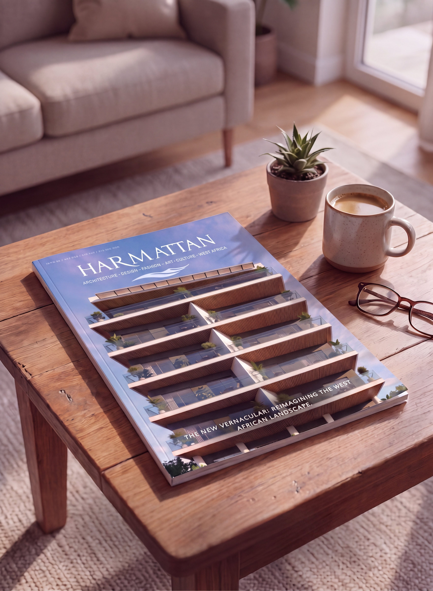

HARMATTAN MAGAZINE / ABOUT
About Harmattan
Harmattan Magazine is a quarterly publication exploring architecture, design, fashion, art, culture, and the wider creative and technical energy shaping West Africa.

01 / MISSION
A deliberate pause. A forward-looking practice.
Harmattan is an exploration of what it means to truly design, build, and live in a way that honors our climate, our culture, and our uncompromising drive toward the future. We are interested in the dialogue between history and the horizon: in translating ancestral intelligence into contemporary structural, material, and cultural language.
02 / PERSPECTIVE
Design as a living ecosystem
Our coverage moves across architecture, interiors, objects, fashion, art, mobility, aviation, and the spaces between them. We look at how people shape and inhabit the world around them, with particular attention to climate, culture, materiality, craft, and the realities of contemporary West African life.
03 / COLOPHON
Publishing
Harmattan Magazine is published quarterly. Published by Samuel Ayodeji. Editor-in-Chief: Samuel Ayodeji. Printed in Lagos, Nigeria.